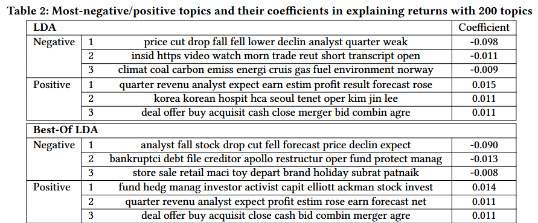
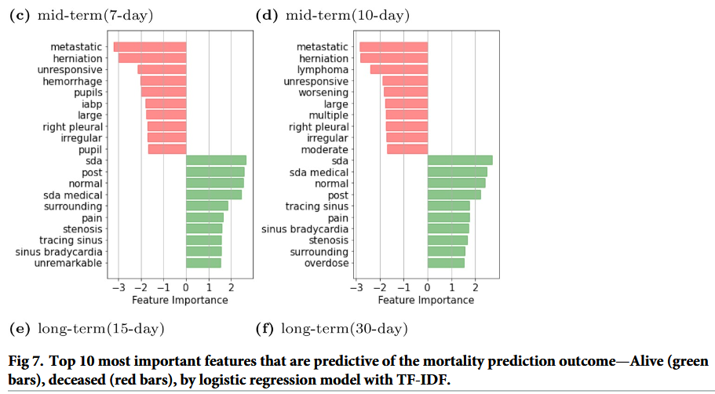
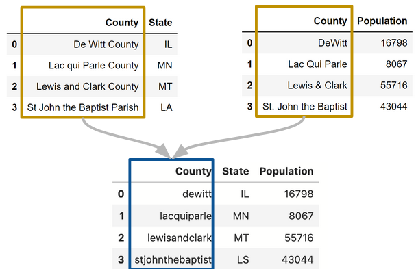

Handling text with string methods#
This document deals with handling text, a generally challenging task in data anaylses. We will cover general str methods and introduce regular expressions (regex) to identify patterns in strings.
Why is handling text important?#
We will illustrate with several examples.
Predicting stock returns
 |
|---|
Truncated table of positive and negative text for predicting stock returns [Glasserman et al., 2020] |
Parsing clinical notes
 |
|---|
Text importance in long-term mortality prediction, truncated from table in [Mahbub et al., 2022] |
Untangling inspection violations
import pandas as pd
food = pd.read_csv('../data/inspections.csv')
violations = food['Violations']
violations[~violations.isna()].head()
violations[0]
Why is handling text difficult?#
(Class discussion)
Two primary goals of handling text#
Canonicalization : transforming text of different representations into a standard form.
 |
|---|
Example of canonization for joining tables with mismatched labels (DS 100). |
Extraction: extracting information into useful features.
Example: extracting dates, times, and other information from log files:
169.237.46.168 - - [26/Jan/2024:10:47:58 -0800] "GET /cs150/Winter24/ HTTP/1.1" 200 2585 "http://cs.northwestern.edu/courses"
day, month, year = "26", "Jan", "2024"
hour, minute, seconds = "10", "47", "58"
Python string methods and pandas str#
In base Python, manipulating strings is possible through various string methods.
s = "ABc,123,$%^&"
s
'ABc,123,$%^&'
s.lower()
'abc,123,$%^&'
s.upper()
'ABC,123,$%^&'
s.replace(',', ' ')
'ABC 123 $%^&'
s.split(',')
['ABC', '123', '$%^&']
'ABD' in s
False
len(s)
12
s[7:9]
',$'
Issue?
Although the string operations are useful (recall our apply() function), Python assumes we work with one string at a time.
Looping over each entry of a large dataset becomes slow.
In pandas, most of the operations are vectorized to perform on multiple entries simultaneously.
Operation |
Python (single string) |
|
|---|---|---|
transformation |
|
|
replacement/deletion |
|
|
split |
|
|
substring |
|
|
membership |
|
|
length |
|
|
Practice: canonicalization#
Combine the following two tables into one, showing the county, state, and population as columns.
import io
import pandas as pd
county_population = pd.read_csv(
io.StringIO('''County,Population
DeWitt,16798
Lac Qui Parle,8067
Lewis & Clark,55716
St. John the Baptist,43044'''))
county_state = pd.read_csv(
io.StringIO('''County,State
De Witt County,IL
Lac qui Parle County,MN
Lewis and Clark County,MT
St John the Baptist Parish,LS'''))
def canon_text(s):
result = (s.str.lower()
.str.replace('&', 'and')
.str.replace(' ', '')
.str.replace('county', '')
.str.replace('parish', '')
.str.replace('.', '')
)
return result
canon_text(county_population['County'])
canon_text(county_state['County'])
0 dewitt
1 lacquiparle
2 lewisandclark
3 stjohnthebaptist
Name: County, dtype: object
Regular expressions#
Many text data have “some” inherited structure, e.g., log files, concatenated violation codes.
Practice: manipulating logs#
Starting with an example:
Consider the two log entries below, how can we extract the dates and times, perhaps with split()?
169.237.46.168 - - [26/Jan/2024:10:47:58 -0800] "GET /cs150/Winter24/150.html HTTP/1.1" 200 2585 "http://cs.northwestern.edu/courses/"
193.205.203.3 - - [2/Feb/2023:17:23:6 -0800] "GET /iems394/Notes/dim.html HTTP/1.0" 404 302 "http://iems.northwestern.edu/academics/"
line1 = '169.237.46.168 - - [26/Jan/2024:10:47:58 -0800] "GET /cs150/Winter24/150.html HTTP/1.1" 200 2585 "http://cs.northwestern.edu/courses/"'
line2 = '193.205.203.3 - - [2/Feb/2023:17:23:6 -0800] "GET /iems394/Notes/dim.html HTTP/1.0" 404 302 "http://iems.northwestern.edu/academics/"'
def return_date_time(line):
result = line.split('[')[1].split(']')[0]
return result
return_date_time(line1)
'26/Jan/2024:10:47:58 -0800'
return_date_time(line2)
'2/Feb/2023:17:23:6 -0800'